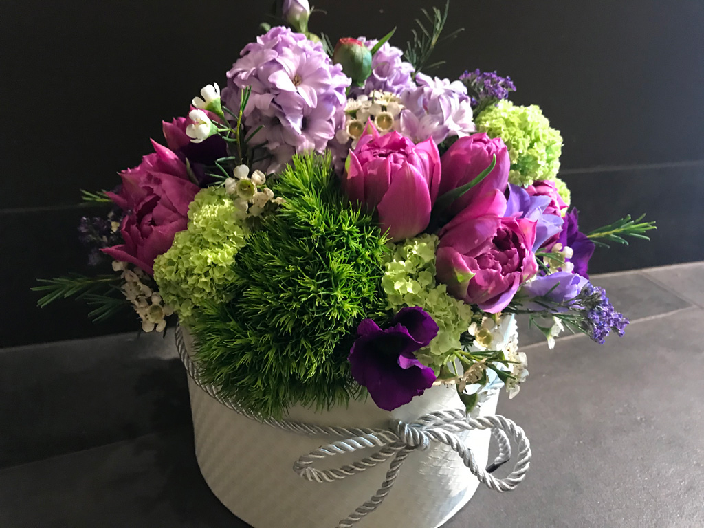

Daugiametės gėlės, katalogas. Auginimas, priežiūra.
- Muilo gėlės gera kaina - Muilogeles.lt
Kitokios gėlės - tai kitokių gėlių parduotuvė. Dėl augalų sezoniškumo bei kitų priežasčių mūsų turimi augalai nuolat keičiasi, todėl negalime garantuoti, kad susodinsime kompozicijas, identiškas pavaizduotoms nuotraukose. - Gėlių pavadinimai su nuotraukomis | Gėlių rojus
Gėlės. Žydintys kraujagyslių augalai. 2020. Gėles auginantys augalai tai daro norėdami daugintis. Visi žydintys augalai yra angiospermai ir yra naujausios augalų rūšys, besivystančios po 200 milijonų metų. Medžiai Vieni medžiai žydi gražiomis gėlėmis, o kiti žiedus nuspalvina žaliai, todėl jų nėra lengva atskirti. - Gėlėsloret - E-parduotuvė
Daugiametės gėlės, dvimetės gėlės, vasarinės gėlės, balkoninės gėlės, prieskoniniai augalai, daigeliai. Lelija, Lubinai, Alūnė (Heuchera), Ežiuolė ... - Gėlės dėžutėje, puokštės, rožės internetu | Gėlių Butikėlis
daugiametes geles, vienmetes geles, geles. Gėles galite pirkti: Tiesiogiai iš namų Vilniuje, kreipdamiesi numeriu skiltyje Kontaktai ir informacija Atvykti į muges, kuriose dalyvauju. - Daugiametės gėlės
gėlės. Gėlė – augalas, turintis estetinę vertę, dažniausiai vertinamas dėl žiedų, rečiau – dėl dekoratyvių lapų. Dauguma gėlių – žoliniai augalai, likę – krūmai. 8 buityje padėsiantys triukai ... - Kitokios gėlės
Daugiametės gėlės. Kur ir kaip sodinti. Viskas apie gėles.Didelis gėlių katalogas, žinynas. Daug naudingos informacijos gėlių mylėtojams. - Kambarinės gėlės | Kambarinės gėlės | Gėlės
BALKONINĖS GĖLĖS Kategorijos – Bakopa– Begonija (svyranti)– Dichondra– Ipomėja– Karpažolė– Lakišius– Pelargonija– Pelargonija (pilnavidurė)– Petunija– Skeptrenė– Šlamutis – Surfinija– Verbena – BAKOPA bakopa "Sutera cordata" bakopa "Glacier Blue" bakopa "Rose" bakopa "Purple" – BEGONIJA (SVYRANTI) begonija (svyranti) "Elserta orange" begonija (svyranti ... - Daugiametės gėlės, katalogas. Auginimas, priežiūra.
Muilo gėlės žiedai pagaminti iš muilo, žiedai kvepia ir skleidžia malonų kvapą. Tirpsta šiltame vandenyje. Greitas ir saugus pristatymas visoje Lietuvoje. - Gėlės | October 2020
Pilnas lauko bei kambarinių gėlių pavadinimų sąrašas su nuotraukomis. Daugiau augalų nuotraukų, išsamesnius aprašymus, auginimo bei priežiūros patarimus rasite kiekvienos gėlės puslapyje. - Gėlės į Namus Internetu | Gėlių Pristatymas | GeliuFeja.lt
Svogūninės ir šakninės gėlės RUDENINIS ASORTIMENTAS. Rožių sodinukai plikomis šaknimis. Budlėjos (vazonėlyje). Hortenzijos (vazonėlyje) Alyvos (vazonėlyje). Kinrožės (vazonėlyje) PAVASARINIS ASORTIMENTAS. Svogūninės ir šakninės gėlės. ...

GĖLIŲ LIGOS Gėlių rudys priemonės ir patarimai ROŽIŲ LIGOS Virusinės tulpių ligos Tulpių ligos Kovos priemonės su grybinėmis tulpių ligomis Gėlės Azalijos ligos, kenkėjai Raktažolių ligos ir kaip nuo jų apsisaugoti Gėlės Begonijos kenkėjai ir ligos KAMBARINĖS GĖLĖS SVOGŪNINĖS GĖLĖS DAUGIAMETĖS GĖLĖS ROŽĖS TULPĖS FREZIJOS JURGINAI KARDELIAI APIE MUS IEŠKOTI
Daugiau rezultatų...
{ "homeurl": "http://apiegeles.lt/", "resultstype": "vertical", "resultsposition": "hover", "itemscount": 4, "imagewidth": 70, "imageheight": 70, "resultitemheight": "auto", "showauthor": 0, "showdate": 1, "showdescription": 1, "charcount": 3, "noresultstext": "Nėra rezultatų", "didyoumeantext": "Turėjote omeny:", "defaultImage": "http://apiegeles.lt/wp-content/plugins/ajax-search-pro/img/default.jpg", "highlight": 0, "highlightwholewords": 1, "openToBlank": 0, "scrollToResults": 0, "resultareaclickable": 1, "autocomplete": { "enabled": 1, "googleOnly": 0, "lang": "en", "mobile": 1 }, "triggerontype": 1, "triggeronclick": 1, "triggeronreturn": 1, "triggerOnFacetChange": 1, "overridewpdefault": 0, "redirectonclick": 0, "redirectClickTo": "results_page", "redirect_on_enter": 0, "redirectEnterTo": "results_page", "redirect_url": "?s={phrase}", "more_redirect_url": "?s={phrase}", "settingsimagepos": "left", "settingsVisible": 0, "hresulthidedesc": "0", "prescontainerheight": "400px", "pshowsubtitle": "0", "pshowdesc": "1", "closeOnDocClick": 1, "iifNoImage": "description", "iiRows": 2, "iiGutter": 5, "iitemsWidth": 200, "iitemsHeight": 200, "iishowOverlay": 1, "iiblurOverlay": 1, "iihideContent": 1, "loaderLocation": "auto", "analytics": 0, "analyticsString": "?ajax_search={asp_term}", "mobile": { "trigger_on_type": 1, "trigger_on_click": 1, "hide_keyboard": 0 }, "aapl": { "on_click": 0, "on_magnifier": 0, "on_enter": 0, "on_typing": 0 }, "compact": { "enabled": 0, "width": "100%", "closeOnMagnifier": 1, "closeOnDocument": 0, "position": "static", "overlay": 0 }, "animations": { "pc": { "settings": { "anim" : "fadedrop", "dur" : 300 }, "results" : { "anim" : "fadedrop", "dur" : 300 }, "items" : "fadeInDown" }, "mob": { "settings": { "anim" : "fadedrop", "dur" : 300 }, "results" : { "anim" : "fadedrop", "dur" : 300 }, "items" : "voidanim" } }, "autop": { "state": "disabled", "phrase": "", "count": 30 } }KATEGORIJOS
ALSTROMERIJA (3) ANTURIS (4) AZALIJA (4) BEGONIJA (8) CHRIZANTEMOS (8) CIKLAMENAI (4) DAUGIAMETĖS GĖLĖS (69) FREZIJOS (6) GĖLIŲ LIGOS (53) GERBEROS (5) GVAZDIKAI (13) HORTENZIJA (5) ĮDĖJOS NAMAMS (7) JURGINAI (7) KALIJA (6) KAMBARINĖS GĖLĖS (126) KARDELIAI (7) LELIJA (4) MEILENIS (5) NARCIZAS (4) ORCHIDĖJOS (3) PELARGONIJA (5) PUANSETIJA (5) RAKTAŽOLĖ (4) ROŽĖS (26) SVOGŪNINĖS GĖLĖS (32) TULPĖS (15) VIENMETĖS GĖLĖS (17)SKAITOMIAUSI:
4 BEGONIJABEGONIJA kambarinė gėlė
Written by apiegeles.lt 1Astilbė (Astilbe) daugiametė
by apiegeles.lt 1PREPARATAI NUO ROŽIŲ LIGŲ
by Vytas 1FREZIJŲ AUGINIMAS IŠ GUMBASVOGŪNIŲ
by apiegeles.lt 1FREZIJŲ AUGINIMAS IŠ SĖKLŲ
by apiegeles.lt 0 DAUGIAMETĖS GĖLĖSBazillikinis putoklis gvazdikinių šeimos augalas
Written by Vytas 0Alpinė Iiūtpėdė graižažiedžių šeimos pilkai sidabriškas augalas
by Vytas 0Kaukazinė laumenė graižažiedžių šeimos šakniastiebinis
by Vytas 0Sidabrinis laibenis kryžmažiedžių šeimos daugiametis augalas
by Vytas 0Delavajo inkarvilėja bignoninių šeimos šakniastiebinis augalas
by Vytas 0Alpinė hutčinzija kryžmažiedžių šeimos augalas, aptinkamas Europos kalnuose
by Vytas 0Raudonžiedė heichera šakniastiebinis uolaskėlinių šeimos augalas
by Vytas 0Bestiebis gencijonas gencijoninių šeimos augalas, aptinkamas Alpėse
by Vytas 0Krokas Vilkdalginių šeimos augalas, paplitęs Vidurinėje Azijoje
by Vytas 0Lelijos turi būti apsaugotos nuo stiprių vėjų medžiais ar krūmais
by VytasVisas rezultatas pagal: DAUGIAMETĖS GĖLĖS
Advertisement 0 DAUGIAMETĖS GĖLĖSBazillikinis putoklis gvazdikinių šeimos augalas
PATALPINO VytasPutoklis (Saponaria L.) Bazillikinis putoklis (S. ocymoides L.) gvazdikinių (Caryophyllaceae) šeimos ..
Patalpinta prieš 13 val 5 Views 0 0 0 DAUGIAMETĖS GĖLĖSAlpinė Iiūtpėdė graižažiedžių šeimos pilkai sidabriškas augalas
PATALPINO VytasLiūtpėdė, edelveisas (Leontopodium R. Br. ex Cass.) Alpinė Iiūtpėdė (L. alpinum Cass.) graižažiedžių ..
Patalpinta prieš 13 val 6 Views 0 0 0 DAUGIAMETĖS GĖLĖSKaukazinė laumenė graižažiedžių šeimos šakniastiebinis
PATALPINO VytasLaumenė (Doronicum L.) Kaukazinė laumenė (D. caucasicum L.) graižažiedžių (Asteraceae) šeimos ..
Patalpinta prieš 13 val 8 Views 0 0 0 DAUGIAMETĖS GĖLĖSSidabrinis laibenis kryžmažiedžių šeimos daugiametis augalas
PATALPINO VytasLaibenis (Alyssum L.) Sidabrinis laibenis (A. argenteum Vitm.) kryžmažiedžių (Brassicaceae) šeimos ..
Patalpinta prieš 13 val 6 Views 0 0 0 DAUGIAMETĖS GĖLĖSDelavajo inkarvilėja bignoninių šeimos šakniastiebinis augalas
PATALPINO VytasInkarvileja (Incarvillea Juss.) Delavajo inkarvilėja (I. delavayi Burr. et Franch) bignoninių (Bignoniaceae) ..
Patalpinta prieš 2 d. 5 Views 0 0 0 DAUGIAMETĖS GĖLĖSAlpinė hutčinzija kryžmažiedžių šeimos augalas, aptinkamas Europos kalnuose
PATALPINO VytasHutčinzija (Hutchinsia R. Br.) Alpinė hutčinzija (H. alpina (L.) R. Br.) kryžmažiedžių (Brassicaceae) ..
Patalpinta prieš 2 d. 9 Views 0 0 0 DAUGIAMETĖS GĖLĖSRaudonžiedė heichera šakniastiebinis uolaskėlinių šeimos augalas
PATALPINO VytasHeichera (Heuchera L.) Raudonžiedė hetchera (H. sanquinea Engelm.) šakniastiebinis uolaskėlinių ..
Patalpinta prieš 2 d. 8 Views 0 0 0 DAUGIAMETĖS GĖLĖSBestiebis gencijonas gencijoninių šeimos augalas, aptinkamas Alpėse
PATALPINO VytasGencijonas (Gentiana L.) Bestiebis gencijonas (G. acaulis L.) gencijoninių (Gentianaceae) šeimos augalas, ..
Patalpinta prieš 2 d. 8 Views 0 0 0 DAUGIAMETĖS GĖLĖSBijūnai vienoje vietoje gali augti 10-15 ir daugiau metų
PATALPINO VytasVaistinis bijūnas (P. officinalis L.). Kai kurie autoriai laiko, kad tai yra paprastojo bijūno (P. peregrina ..
Patalpinta prieš 6 mėn. 639 Views 1 0 0 DAUGIAMETĖS GĖLĖSAguona Aguoninių šeimos žolinis augalas
PATALPINO VytasAguona (Papaver L.) Aguoninių (Papaveraceae) šeimos žoliniai, šakota liemenine šaknimi augalai, ..
Patalpinta prieš 6 mėn. 433 Views 0 0 SENESNI › Mūsų draugai: portalas apiegeles.lt neatsako už straipsnių, komentarų, nuotraukų ir kitos portale pateiktos informacijos tikslumą. | Mes esame: FACEBOOKE | GREITA PAIEŠKA: geles | hortenzija | rozes | bijunai | kambarines geles | orchidejos | frezijos | smidras | tulpes | daugiametes geles | jurginai | chrizantemos | azalija | pelargonija | amarilis | dracena | pasiflora | kalija | fikusas | kardeliai | ciklamenas | begonija | paparciai | gvazdikai | anturis | ozeksnis | gebene | silokas | eustoma | astras | raktazole | aguonos | difenbachija | lauras | palmes | klivija | sanpaulija | monstera | alstromerija | gerbera | daugiametes geles | gėlių bazė vilniujeSvetainėje naudojami slapukai, kurie padeda užtikrinti jums teikiamų paslaugų kokybę. Tęsdami naršymą, jūs sutinkate su apiegeles.lt slapukų politika. Sutinku Daugiau apie privatumo politiką. Daugiau apie privatumo politiką.
Necessary Always Enabled
KATEGORIJOS GĖLIŲ LIGOS ▼ Gėlių rudys priemonės ir patarimai ROŽIŲ LIGOS Virusinės tulpių ligos Tulpių ligos Kovos priemonės su grybinėmis tulpių ligomis Gėlės Azalijos ligos, kenkėjai Raktažolių ligos ir kaip nuo jų apsisaugoti Gėlės Begonijos kenkėjai ir ligos KAMBARINĖS GĖLĖS SVOGŪNINĖS GĖLĖS DAUGIAMETĖS GĖLĖS ROŽĖS TULPĖS FREZIJOS JURGINAI KARDELIAI
